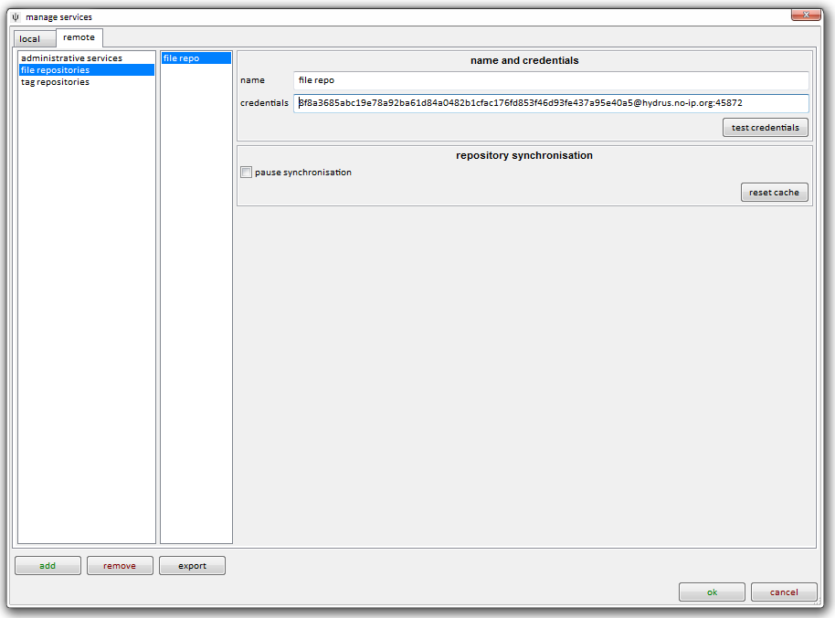

first off
I have purposely not pre-baked this into the client's install. You have to put it in yourself. The client won't connect anywhere until you tell it to.
access keys
If this stuff be-fuzzles you, you can go help->i don't know what I am doing->just set up some repositories for me, please and you _should_ be all set up automatically.
I run a public, objective tag repository that you are welcome to contribute to. I also run a read-only file repository that you can search and download from to get a feel for the interface. The files on my file repo are appropriately tagged in my tag repo.


Here's the info so you can copy it:
- public tag repository: 4a285629721ca442541ef2c15ea17d1f7f7578b0c3f4f5f2a05f8f0ab297786f@hydrus.no-ip.org:45871
- read-only file repository: 8f8a3685abc19e78a92ba61d84a0482b1cfac176fd853f46d93fe437a95e40a5@hydrus.no-ip.org:45872
Tags are rich, cpu-intensive metadata. My repository has millions of mappings, and your client will eventually download and store them all. It will take a few hundred MB and some hours total processing time to fully synchronise. It will mostly happen in the background, without you noticing--for most users, it takes a week or more to quietly catch up. If you interrupt its processing maintenance, it will continue where it left off the next time it runs.